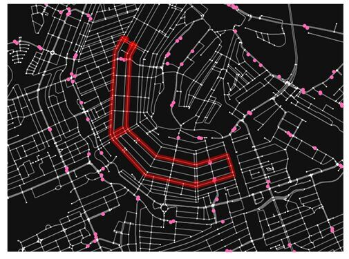
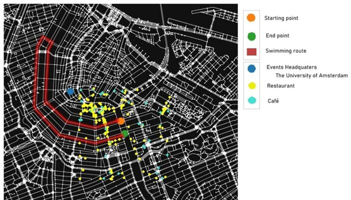
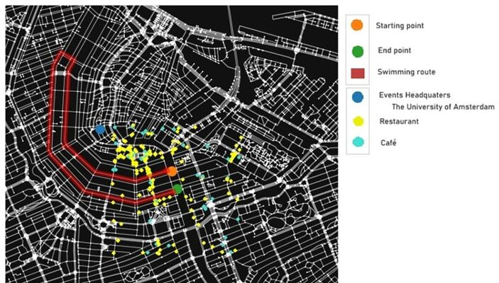
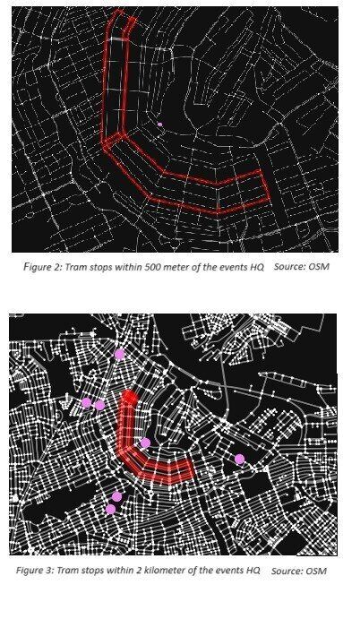

Assignment 4
Paris is hosting the Paralympics in 2024. One of the events at the Paralympics is an open water swimming event in the Seine (apparently the water is clean or so the French say). Since the City of Amsterdam thinks it is beter than Paris, they want to host an event before the Paralympics, snubbing the Parisians. The idea is to host a 5km. open water swimming event through the canals of Amsterdam. You are asked by the municipality of Amsterdam to advise on the feasibility of the event from the perspective of the safety of the partaking athletes from an environmental perspective. The event is going to be hosted in May.For this exercise you have chosen a route in Amsterdam for the canal swimming event. Preferably you have this route calculated using Python. You can set a start point and an end point and then try to find a route that has a certain distance (min. 5 km.)
The Municipality wants you to find a location for the Event Headquarters. They decided it would be best if this E.H. is as close to the centre of the swimming route. There is a bit of a concern for the after party and the stream of visitors. They want you to quantify the number of visitors that can reach the event and the capacity for festivities after the event.
• Find the centre of the nodes of the swimming route. See this link.
• Use the centre to find a suitable spot for the Event Headquarters.
• Find the closest bus and tram stops at the start and finish of the swimming route. How many people can be transported within an hour.
• Can you find which bus and tram lines these are, and can you find their routes?
• Calculate the centrality of the start, finish, and centre node of the route. Which centrality calculation makes the most sense. See this link.
• Find all cafes, restaurants near the finish line. Walking time smaller than 10 minutes. Download .zip files of all jupyter noteboooks with corresponding CVS files
Results
It is time to present the swimming route for the Amsterdam pre-Paralympics city swim. Now that the external conditions and technicalities of water quality, the energy impact of the accompanying boats and the overnight stays are discussed, the route can be calculated. Obviously, the picturesque canals of Amsterdam make the most impact for touristic value and instagrammability. Therefore, the swim will be held in the Herengracht and the Keizersgracht, from the Leliegracht until the Amstel, as presented in Figure 1.*calculations for this are in Jupyter Notebook called WK Jupyter Notebook.ipynb*
Events’ Headquaters
For the swim event to operate optimally, a headquarters needs to be determined. This location must be a central point. To find the central point, the centrality must be calculated. Centrality is an index weighing certain points to be more ‘central’ or important in the network than others, based on a closer distance to other points in the whole network. This indicator is taken because next to the swimmers, most visitors of the event will be walking, therefore it is important to find the shortest walking path to the central point from every other corner of the swimming route – as done in what is called closeness centrality in literature (Zhang & Luo, 2017). Calculating the closeness centrality of the whole route gives the address of the University of Amsterdam (Spui 21, Amsterdam) as an ideal central location. This place is suitable, being a spacious and semi-public location. Also, the close ties between the university and the municipality support the suitability for being the events’ headquarters.
Bus and tram stops
Accessibility is not only determined by walking distance, as stated before, but also by the proximity of public transport to the swimming route. Taking the central point (the event’s headquarters) as the main bus and tram stop, makes the route closely accessible for everyone on foot from there. Buses and trams run through the city center of Amsterdam, close to where the swimming takes place. The closest tram stop to the events head quarters is ‘Koningsplein’ (see Figure 2). Tramline 2 (Central Station – Oudena) and 12 (Central Station – Victorieplein) runs through here. This is the only tram stop within 500 meters, further tram stops are visible in Figure 3. The bus does not run here.
The amount of people that can be transported by the tram to Koningsplein in one hour is calculated too. The trams 2 and 12 stop at Koningsplein 12 times in one hour on a weekday, a Sunday and on holidays, and this is 14 times on a Saturday. The maximum amount of people that travel with both trams on a weekday is 2010, on a Sunday or on holidays this is 1852 and on a Saturday this number goes up to 2055 people.
Leisure time
While the swimmers are doing their job in the canal, food and drinks are essential for the visitors to keep the excitement up. Good French wine in café or a good French cheese in a restaurant, both indispensable to the Paralympics party. Therefore, the restaurants and café’s are presented in Figure 1. There are 49 cafes and 154 restaurants within a 10-minute walk distance, so about 700 meters away from the end point of the race.
Figure 4: Close by bus stops from the swimming route. Source: Open
Streetmap (OSM)

Figure 1: Swimming route with beginning and end point,
headquarters of the event, close by restaurants and cafes.
Source: Open Streetmap (OSM


